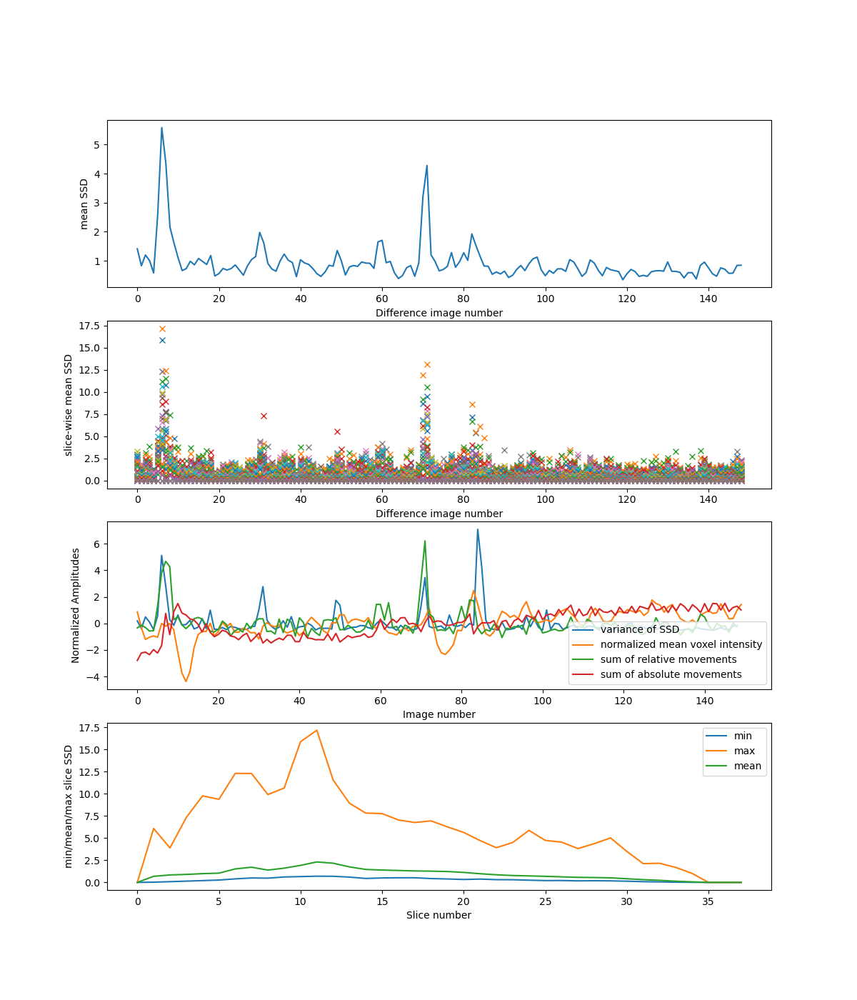
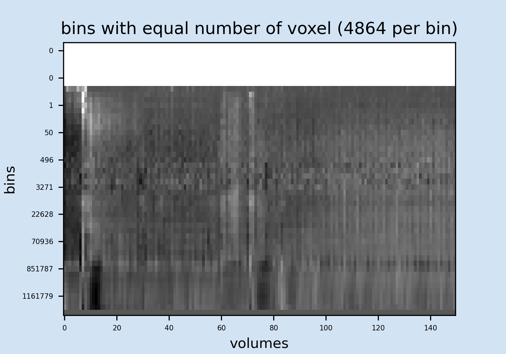
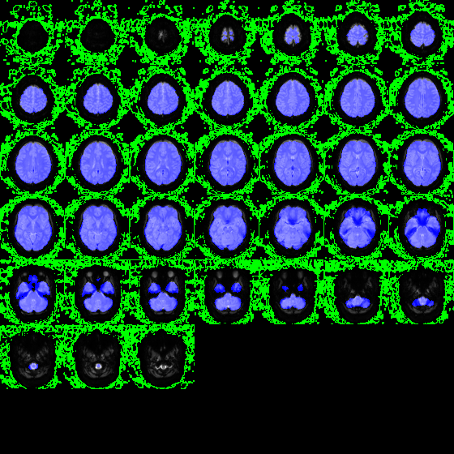
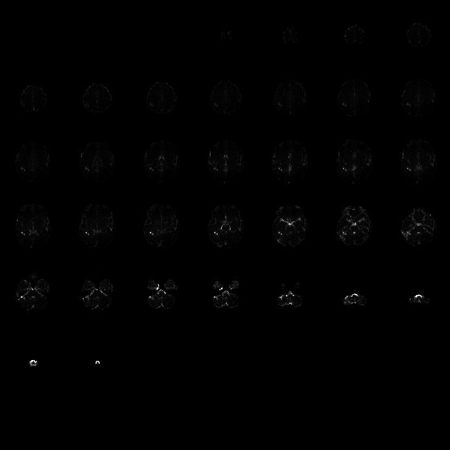

Variance of voxel intensity
For better visualization the image is thresholded at max 1375515232.0 to minimize the scaling effect of large outliers. See here for guidelines about how to use this plot.

| Functional file | scan-2_motion-corrected |
|---|---|
| Motion file | /storage/research/cinn-workspace/cinnqc/cinnqc/examples/fmri-open-qc-rest-200/derivatives/cinnqc/sub-208/scan-2_motion-corrected.par |
| Threshold value | None |
| Mask file | /storage/research/cinn-workspace/cinnqc/cinnqc/examples/fmri-open-qc-rest-200/derivatives/cinnqc/sub-208/scan-2_brain_mask.nii.gz |
| SNR threshold | 25 |
| Slice Dimensions | 80x80 |
|---|---|
| Number of Slices | 38 |
| Number of Volumes | 150 |
| Voxel Size | 3.0x2.9999998x3.8407893 |
| Total Number of Voxels | 243200 |
The first plot shows the mean of the scaled squared difference (SSD)over all voxel in the mask. The second plot shows the mean of the (SSD) for each slice separately. The third plot shows: 1) Normalised average of the demeaned voxel intensity of each volume. 2) Normalised variance of the SSD over all voxels in the mask. 3) (only if motion file was specified as input) : Normalized sum of relative movement (sum of all relative motion translations and rotations.). See here for guidelines about how to use these plots.
Mean voxel time course of bins. See here for guidelines about how to use this plot.
| Mean Signal (unmasked) | 169235.02211675103 |
|---|---|
| Mean Signal SD (unmasked) | 387643.86120155646 |
| Mean Signal (masked) | 979951.3661617588 |
| Mean Signal SD (masked) | 275062.3850472693 |
Voxels included in the masks and used for the quality check are highlighted in blue, voxels used for SNR calculation are highlighted in green. See here for guidelines about how to use this plot.
| Total Number of Voxels | 243200 |
|---|---|
| Mask Threshold Value | None |
| Number of Masked Voxels | 42000.0 |
For better visualization the image is thresholded at max 1375515232.0 to minimize the scaling effect of large outliers. See here for guidelines about how to use this plot.
See here for more info.
| Mask Threshold Value | None |
|---|---|
| Number of Masked Voxels | 42000.0 |
| SNR Threshold | 25 |
| Number of voxels below threshold for SNR | 60800 |
| Mean values of voxel for SNR | 59.519808860781296 |
| STD of voxel for SNR | 85.68039942383038 |
| Value range of voxel for SNR | 1.3668613974004985e-09 - 344.1175156490008 |
| Mean voxel SNR | 11376.855822897194 |
| Min Slice SNR | 7335.77681540996 |
| Max Slice SNR | 15136.47471331521 |
| ALL Slice SNR | nan 15136.47471332 12032.48866157 7335.77681541 9173.97552247 9823.45852412 9805.37057925 9956.78766741 10046.37655795 9240.69005466 9402.44752261 10025.16619076 11200.87515057 11695.78547145 11828.98221289 11783.48833978 11749.07295818 11940.42345833 11963.44110671 11764.5719904 11611.76504436 11631.08306433 11611.76726391 11696.48258985 11854.28919391 12219.46361313 12357.15344098 12429.07893299 12292.61240158 12093.04085633 12422.29243896 12558.798543 12575.19325373 12321.51177632 11232.9120673 nan nan nan |
For better visualization the image is Mean squared scaled difference (SSD) is thresholded at max: 23898.0.This image shows the sum of the difference in voxel intensity between adjacent volumes for each voxel across all adjacent volumes acquired during scanning. See here for more info.
| Mean absolute Movement | 0.11531229165855554 |
|---|---|
| Max absolute Movement | 0.426753 |
| Mean relative Movement | 0.031112831902237136 |
| Max relative Movement | 0.571444 |
| Relative movements (>0.1mm) | 55 |
| Relative movements (>0.5mm) | 1 |
| Relative movements (>voxelsize) | 0 |
Thank you for using pyfMRIqc.py!
AUTHORS:
Michael Lindner and Brendan Williams
University of Reading, 2019
School of Psychology and Clinical Language Sciences
Center for Integrative Neuroscience and Neurodynamics